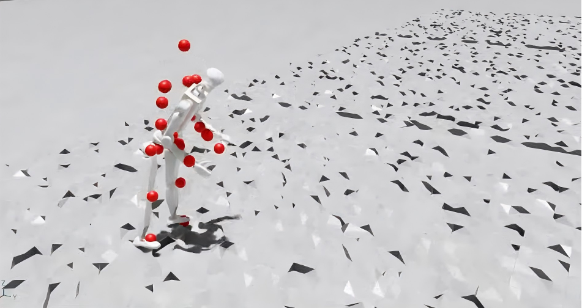
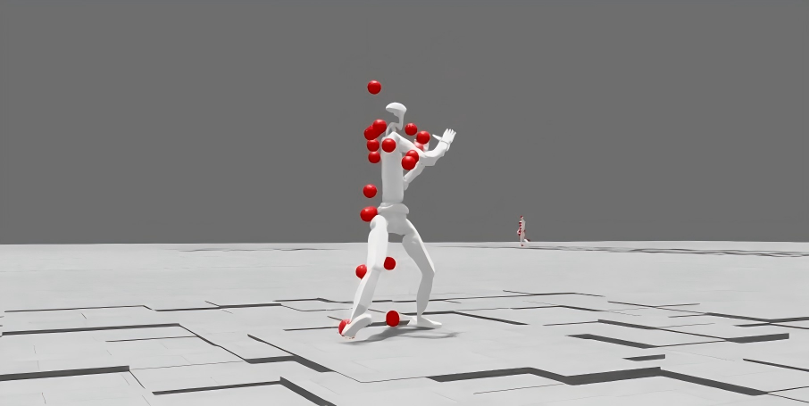
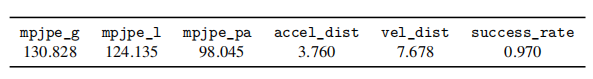
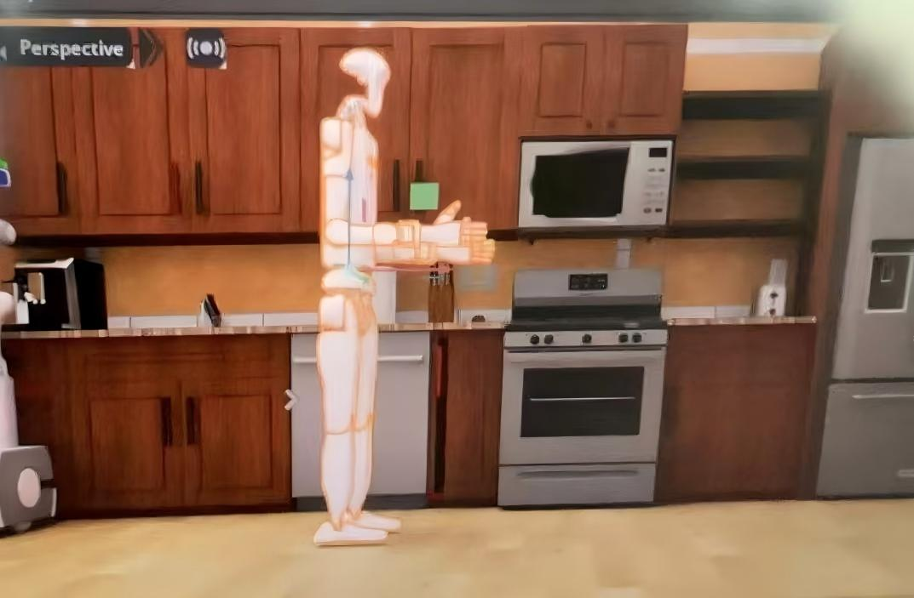
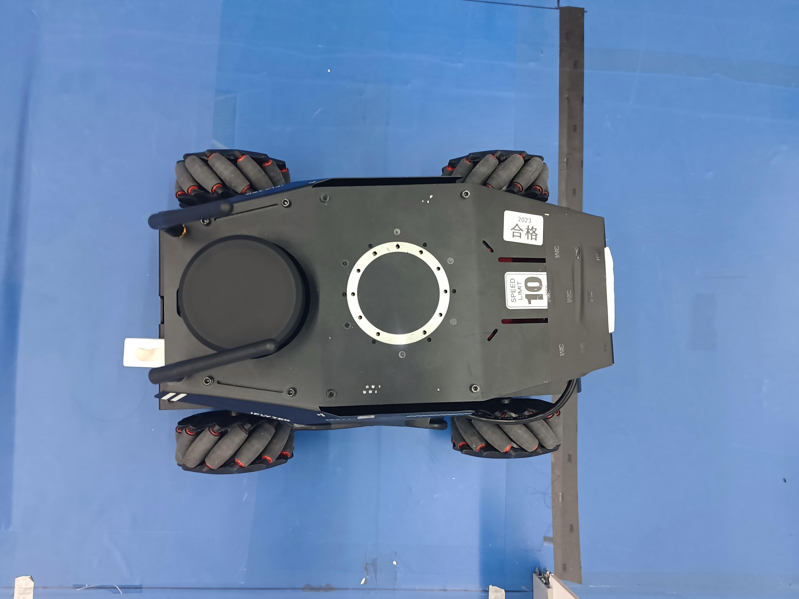
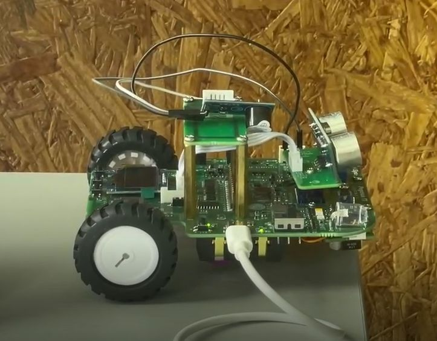
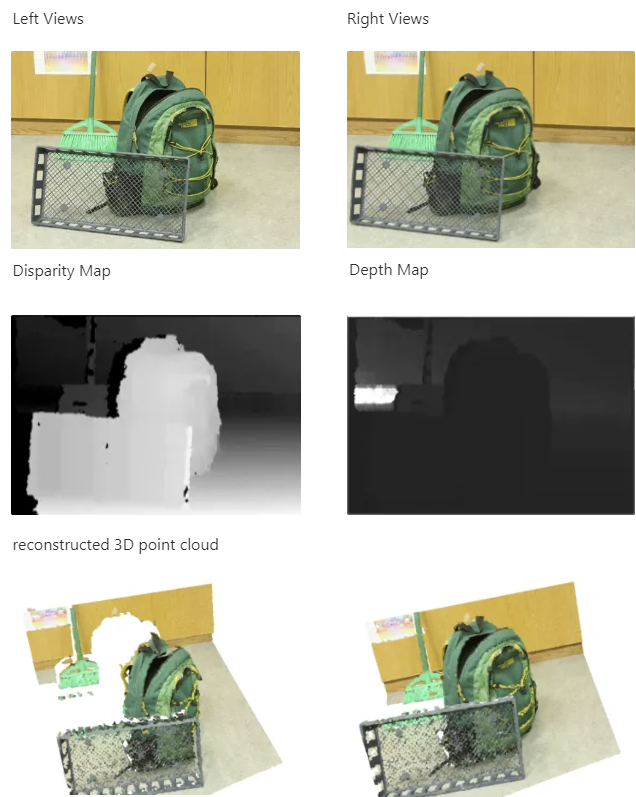
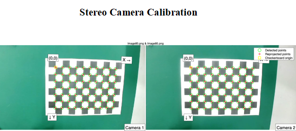

Research on LLM-instructed humanoid robots under Prof. Koushil Sreenath.
Research Intern on humanoid robot learning under Prof. Masayoshi Tomizuka




Second Prize, 2023 East China Division of National Smart Car Competition (Mobile Robot Application track, Team Leader, Awarding Organization: Chinese Association of Automation)
This project was developed for the National College Student Intelligent Vehicle Competition. Using ROS and multiple sensors (LiDAR, RGB camera, IMU, microphone array), it creates a fully autonomous vehicle system capable of mapping, navigation, perception, and speech interaction.
Wheel velocity and steering controlled via a dedicated controller manager.
Autonomous cars, indoor mobile robots, and service robots.
Team Name: RuiXing · Tesla Huangdu
University: Tongji University
Advisors: Prof. Zhang Zhiming, Prof. Zhu Jin
Members: Ye Longqin, Rong Yiren, Liu Yaxuan, Wu Zhiyuan

View on GitHubSecond Prize, 2022 Contemporary Undergraduate Mathematical Contest in Modeling (Team Leader, Awarding Organization: China Society for Industrial and Applied Mathematics)
Developed a remote clock system for embedded intelligent applications.

View on GitHubDesigned and implemented a stereo vision system for real-time 3D reconstruction, generating accurate point clouds for robotic perception and environment modeling.

